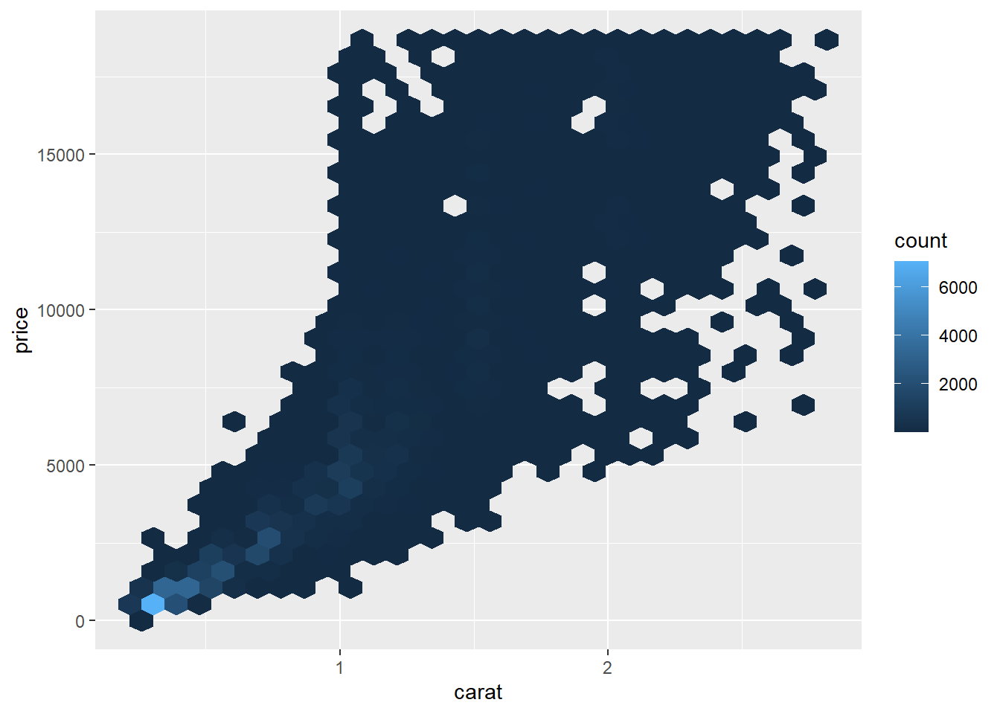

One approach is to replace unusual values with NA.
diamonds2 <- diamonds |>mutate(y =if_else(y <3| y >20, NA, y))
ggplot excludes NA values:
ggplot(diamonds2, aes(x = x, y = y)) +geom_point()
Warning: Removed 9 rows containing missing values or values outside the scale range
(`geom_point()`).
#> Warning: Removed 9 rows containing missing values or values outside the scale range#> (`geom_point()`).
You can suppress the missing warning like this:
ggplot(diamonds2, aes(x = x, y = y)) +geom_point(na.rm =TRUE)
Investigating missing values is also important. Understand the patterns of missingness. Here, missing values in the dep_time variable indicate that the flight was cancelled.
Hard to compare because counts are so different. Use the density, which is the count standardized so that the area under each frequency polygon is one.
Do fair cuts have the highest average price as indicated by the prior plot?
ggplot(diamonds, aes(x = cut, y = price)) +geom_boxplot()
Why are better quality cuts cheaper?
How does highway mileage vary across classes?
ggplot(mpg, aes(x = class, y = hwy)) +geom_boxplot()
Temporarily reordering factors would make the trend easier to see:
ggplot(mpg, aes(x =fct_reorder(class, hwy, median), y = hwy)) +geom_boxplot()
Long variable names look better if you flip the x and y aesthetic mappings:
ggplot(mpg, aes(x = hwy, y =fct_reorder(class, hwy, median))) +geom_boxplot()
Two categorical variables.
Count the cell values in the cross tabulation table and then plot.
ggplot(diamonds, aes(x = cut, y = color)) +geom_count()
Generate the counts
diamonds |>count(color, cut)
# A tibble: 35 × 3
color cut n
<ord> <ord> <int>
1 D Fair 163
2 D Good 662
3 D Very Good 1513
4 D Premium 1603
5 D Ideal 2834
6 E Fair 224
7 E Good 933
8 E Very Good 2400
9 E Premium 2337
10 E Ideal 3903
# ℹ 25 more rows
#> # A tibble: 35 × 3#> color cut n#> <ord> <ord> <int>#> 1 D Fair 163#> 2 D Good 662#> 3 D Very Good 1513#> 4 D Premium 1603#> 5 D Ideal 2834#> 6 E Fair 224#> # ℹ 29 more rows
ggplot(smaller, aes(x = carat, y = price)) +geom_point()
Overplotting can be a problem. You can use alpha:
ggplot(smaller, aes(x = carat, y = price)) +geom_point(alpha =1/100)
Another solution to overplotting is binning. geom_histogram() and geom_freqpoly() bin in one dimension. Use geom_bin2d() and geom_hex() to bin in two dimensions. The difference is between rectangular bins and hexagonal bins. Install the hexbin package to use geom_hex().
ggplot(smaller, aes(x = carat, y = price)) +geom_bin2d()
`stat_bin2d()` using `bins = 30`. Pick better value `binwidth`.
#> `stat_bin2d()` using `bins = 30`. Pick better value `binwidth`.# install.packages("hexbin")ggplot(smaller, aes(x = carat, y = price)) +geom_hex()

You can also bin one numerical variable, so that you are plotting a categorical and numerical:
ggplot(smaller, aes(x = carat, y = price)) +geom_boxplot(aes(group =cut_width(carat, 0.1)))
Warning: Orientation is not uniquely specified when both the x and y aesthetics are
continuous. Picking default orientation 'x'.
#> Warning: Orientation is not uniquely specified when both the x and y aesthetics are#> continuous. Picking default orientation 'x'.
You can make the width of boxplots proportional to number of observations with varwidth = TRUE.